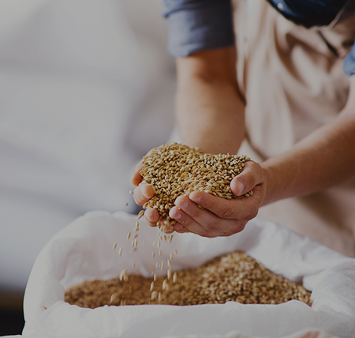

Season item
期間限定

年齢確認
20歳未満の方への酒類の販売は禁止されております。 20歳以上のお客様は、このままお進みください。
私たちについて
私たちは、ビール愛好家のために特別なクラフトビールをお届けすることを使命としています。
選び抜かれた原料と伝統的な醸造技術を駆使し、風味豊かで個性あふれるビールを丹念に仕上げ、
味わい深い一杯が、日常に特別なひとときをもたらすよう、私たちは品質に一切の妥協をしません。
豊富なラインアップから、あなたの好みにぴったりの一杯を見つけてください。
期間限定
商品一覧
こだわり

地元や世界各地から最高品質の麦芽、ホップ、水を使用し、素材の豊かな風味を引き出しています。化学添加物は一切使用せず、自然の恵みだけでビールを造ります。

大量生産ではなく、少量生産にこだわることで、常に最高の品質と風味を提供。各バッチごとに異なる季節やテーマに合わせた限定ビールを醸造しています。

通常のビールよりも長い熟成期間を設け、豊かなコクと深みのある味わいを実現。木樽での熟成も行い、独特の風味を引き出しています。

古くからの伝統的なビール醸造技術に加え、最新の醸造技術やトレンドを取り入れ、唯一無二の味わいを追求。伝統を守りつつも、新たな挑戦を怠りません。

ビールの醸造から味の評価まで、熟練のビアソムリエが監修し、完成度の高い味わいを実現。各ビールは、料理との相性や飲むシーンを考慮して丁寧に設計されています。

環境に優しい持続可能な醸造を目指し、廃棄物の削減や再生可能エネルギーの使用を推進。地域社会と連携し、未来のビール文化を育んでいます。
ニュース